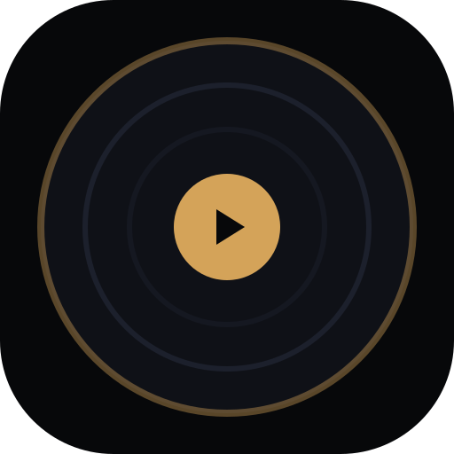

Master Volume
SONANCE
Sonance Hi-Fi Acoustics
Sonance Demonstration
FLAC · 24-bit · 48kHz
Web Audio 5-Band DSP
Standalone
00:00
00:00
Drag and drop local MP3, WAV, or FLAC audio files anywhere on screen or click below to ingest into state queue.
Serverless WebRTC Remote Party
Create a session as Host to stream local MP3 ArrayBuffer buffers to guests, or enter a Room ID to join as Guest.
60Hz
250Hz
1kHz
4kHz
12kHz